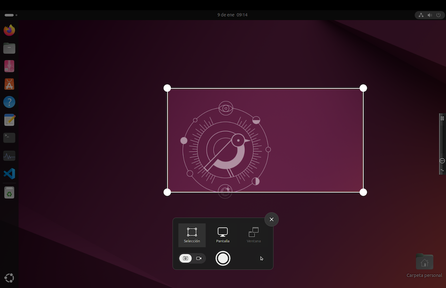
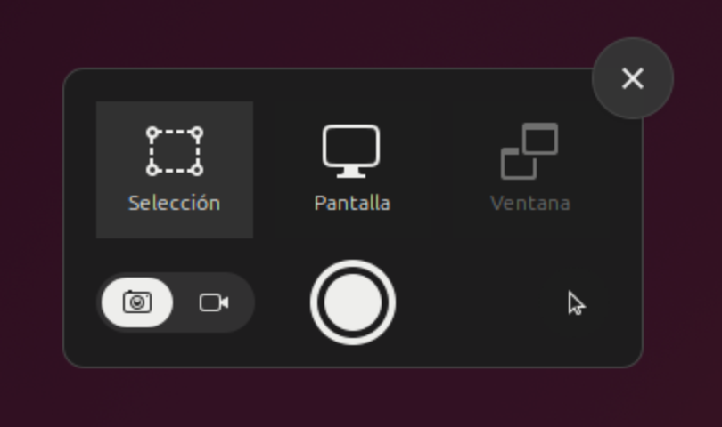
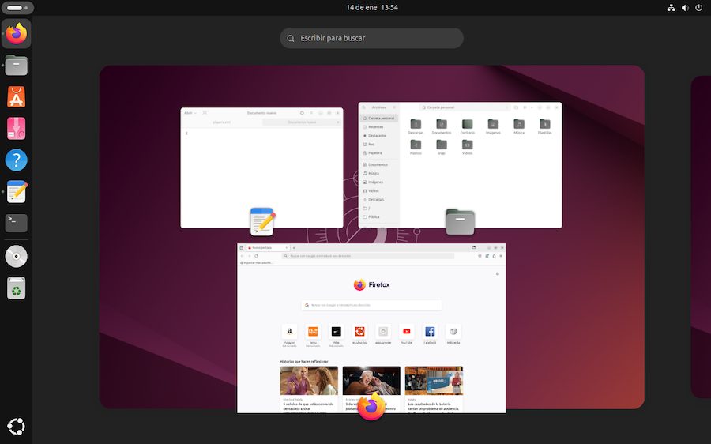
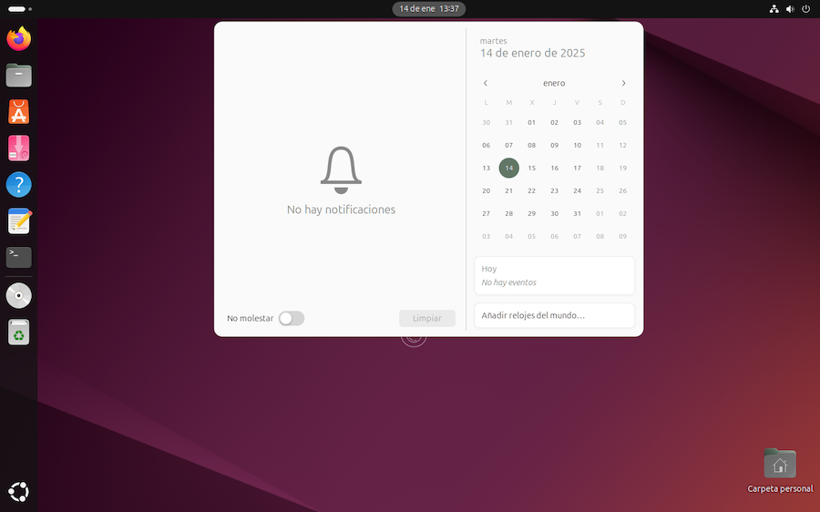

El escritorio de Ubuntu¶
A lo largo de este cuaderno ya hemos ido viendo el funcionamiento del escritorio de Ubuntu. Ahora haremos un repaso de algunas de sus características. Tenemos la guía de uso en este enlace.
El escritorio Gnome¶
Ubuntu se distribuye con diferentes escritorios. La distribución principal viene con una versión ligeramente modificada de GNOME:
-
se sustituye el navegador web de GNOME por Firefox
-
se incluye un complemento llamado AppIndicators, que habilita iconos en la esquina superior derecha de algunas aplicaciones.
-
Se incluye Ubuntu Dock, la barra lateral izquierda para ejecutar aplicaciones.
-
Se incluye Desktop Icons, lo que permite el uso de iconos en el escritorio.
-
Se incluyen botones minimizar y maximizar en las barras de título de las ventanas.
Capturar pantalla¶
Pulsando la tecla Print Screen podemos abrir la aplicación de captura de pantalla:

Teclados Mac
Como lo que tenemos en este cuaderno es un teclado Mac, nos encontraremos con que no hay tecla Print Screen. Podemos simular una pulsación de esta tecla mediante el menú de VMWare, máquina virtual > enviar tecla > Impr Pant. Tendremos un mejor acceso a esta función si activamos la visualización de la minibarra, como se explicó en el apartado dedicado a la instalación del sistema.
La pulsación de Print Screen ejecuta la aplicación Captura de pantalla, que también podemos iniciar desde el menú desplegable del sistema, donde encontraremos un icono al lado del de configuración:

Al ejecutarse la captura de pantalla, muestra un recuadro con seis iconos:

cuyo significado de izquierda a derecha y de arriba abajo es:
- capturar lo seleccionado
- capturar la pantalla completa
- capturar la ventana activa
- capturar imagen/grabar video
- botón para hacer la captura
- mostrar puntero en la captura (si/no)
Al pulsar en el botón Capturar, se guarda una imagen en la carpeta /Imagenes/Capturas de pantalla.
Iconos en el escritorio¶
Para arrastrar un documento o carpeta al escritorio, basta con hacerlo desde el Gestor de archivos. Si pulsamos la tecla Ctrl al mismo tiempo, en lugar de arrastrar, haremos una copia del documento o carpeta.
El contenido del escritorio es en realidad un reflejo de la carpeta /home/usuario/Escritorio, por lo que si abrimos esta en el Gestor de Archivos, también podemos gestionar el contenido del escritorio añadiendo o suprimiendo elementos.
Lanzadores¶
En líneas generales, los programas se pueden ejecutar:
- pulsando en los iconos de la barra lateral, el dock
- buscando en los iconos de la parrilla de programas
- desde el terminal de comandos, introduciendo el nombre del programa.
Una cuarta opción es crear "lanzadores" en el escritorio. Son iconos sobre los que podemos pulsar para ejecutar una acción.
Veamos un ejemplo. Crearemos un lanzador para la calculadora. Lo primero es ejecutarla y abrir el programa Monitor del Sistema. Descubrimos que la calculadora es en realidad un programa llamado gnome-calculator.
Cerramos la calculadora. Abrimos un terminal de comandos y comprobamos el comando a ejecutar:
$ gnome-calculator
Lo siguiente es situarnos en la carpeta de escritorio:
$ cd ~/Escritorio
Los lanzadores son archivos de texto con la extensión .desktop. Creamos uno con:
$ touch calculadora.desktop
Vamos a editar el contenido:
$ gnome-text-editor calculadora.desktop
El texto serán las especificaciones técnicas del lanzador:
[Desktop Entry]
Name=Calculadora
Comment=La calculadora de Gnome
Exec=gnome-calculator
Terminal=false
Icon=/home/usuario/Images/iconoPrograma
Type=Application
Todo esto son las directrices que necesita un lanzador. En el ejemplo, vemos una línea con el comando a ejecutar para iniciar el programa:
Exec=gnome-calculator
El tipo de lanzador se indica en la línea:
Type=Application
El nombre que se mostrará bajo el icono:
Name=Calculadora
Guardamos el contenido del archivo. Seguidamente, tenemos que asignarle permisos de ejecución:
$ chmod +x ~/Escritorio/calculadora.desktop
Finalmente, tenemos que hacer que el lanzador sea "de confianza". Pulsar con el botón secundario del ratón sobre el nuevo icono del escritorio y seleccionar la opción "permitir lanzar".
En realidad hay una forma más cómoda de hacer todo esto. Podemos copiar los lanzadores ya existentes (los que se utilizan para ser mostrados en la parrilla de aplicaciones, por ejemplo). Para ello, examinar la carpeta /usr/share/applications. El lanzador de la calculadora es un archivo llamado org.gnome.Calculator.desktop. Podemos copiarlo a la carpeta ~/Escritorio, pero tendremos que repetir la maniobra de "permitir lanzar" en el icono del escritorio.
Especificaciones de los lanzadores
Los lanzadores son archivos de texto cuyo formato se corresponde con el proyecto Freedesktop.org. Ver especificaciones en la página web del proyecto.
Enlaces a carpetas¶
Para poner en el escritorio un enlace a una carpeta, abrimos el Terminal y ejecutamos el comando:
$ ln -s ~/Imágenes ~/Escritorio/Imágenes
En este ejemplo, hemos creado un enlace a la carpeta /home/usuario/Imágenes. Recuérdese que el símbolo ~ representa el directorio principal de usuario. El comando ln -s crea el enlace. Se le pasa como argumento el archivo o carpeta enlazada, seguido del nombre del enlace, ambos con su ruta.
Áreas de trabajo¶
Cuando tenemos varias ventanas de aplicaciones en ejecución, podemos seleccionar una u otra:
- pulsando en la ventana correspondiente
- pulsando en el icono de la aplicación en la barra lateral (el Dock)
- recorriendo la lista de aplicaciones con la combinación de teclas Alt+Tab
Si tenemos muchas aplicaciones abiertas, podemos utilizar varios escritorios (áreas de trabajo), y poner las aplicaciones en uno u otro. De forma predeterminada, Gnome tiene dos espacios de trabajo disponibles, el original y uno adicional vacío. A medida que vayamos utilizando los espacios, se añadirá siempre uno nuevo vacío.
Pasamos de un escritorio a otro con Ctrl+Alt+Right o en sentido contrario, con Ctrl+Alt+Left. Para utilizar un área de trabajo, desplazarse hacia ella y abrir allí las aplicaciones deseadas.
Podemos obtener una vista conjunta de todas las áreas, y navegar de una a otra. Para ello, pulsar en el icono "Actividades", en la esquina superior izquierda del escritorio. Podemos arrastrar ventanas de un área a otra.
Para suprimir un área de trabajo, simplemente cierre todas las ventanas que tenga, o muévalas a otras áreas de trabajo.
Tecla Super¶
En los teclados Mac hay una tecla Cmd que Linux toma como tecla Super. En otros teclados puede ser una diferente. Una vez identificada la tecla que sirve como Super, podemos configurar su uso en el apartado de configuración del sistema, apartado Teclado.
En el escritorio, pulsando en Super se muestra una vista general de ventanas y áreas de trabajo. Podemos usarlo para labores de navegación:

Avisos y agenda¶
En el centro de la barra superior del escritorio tenemos un reloj y fecha. Pulsando ahí, se abre una ventana de notificaciones y calendario. Pulsando en uno de los días, se abre una agenda que nos permite programar avisos.

El Dock¶
Ya hemos visto que la barra lateral del escritorio se denomina Dock, y es un añadido de Ubuntu al escritorio de Gnome. Podemos pulsar en cualquier icono para iniciar la aplicación o para seleccionar una de las ventanas abiertas.
Cuando un icono muestra uno o varios puntos, significa que hay abiertas una o varias ventanas de la aplicación correspondiente. Pulsando sobre el icono, se muestra la ventana abierta o una vista de todas ellas, si son varias, para seleccionar una de ellas. Podemos abrir nuevas ventanas sobre el icono pulsando con el botón secundario del ratón.
Para reorganizar los iconos en el Dock, basta con arrastrarlos a su nueva posición. Para quitar un icono del Dock, pulsar con el botón secundario del ratón y seleccionar "quitar".
El Dock muestra los iconos de aplicaciones favoritas y las que están en ejecución. Para mantener una aplicación en el Dock permanentemente, ejecutarla, pulsar sobre ella en el Dock con el botón secundario del ratón, y seleccionar la opción Pin to Dock. Una vez añadido un icono al Dock, desaparecerá de la parrilla.
Para organizar los iconos de la parrilla, arrastrarlos. Para crear carpetas con iconos, arrastrar un icono sobre otro. Se unirán los dos en un grupo. Para añadir otros iconos al grupo, arrastrarlos. Para editar el nombre del grupo, pulsar sobre el grupo y, una vez abierto su contenido, editar la cabecera. Para eliminar el grupo, arrastrar los iconos fuera del mismo.
Para ocultar el Dock, acudir a la configuración del sistema, apartado Escritorio > Dock. También podemos cambiar el tamaño de los iconos, o llevar el Dock al costado derecho o inferior del escritorio.
Para mostrar u ocultar la papepelera o los dispositivos externos conectados, acudir a la configuración del sistema, apartado Escritorio > Dock > Comportamiento.